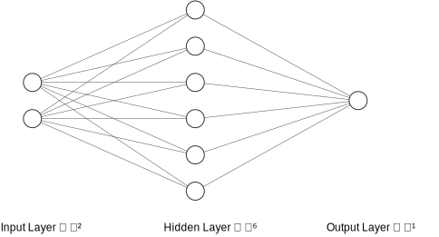
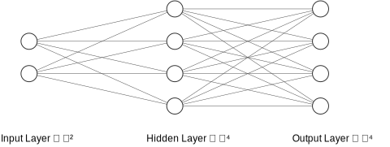
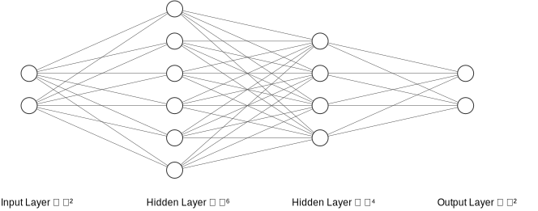

Declan Kelly - G00378925
Neural Network
I have implemented 3 characters: Goblin, Imp and the Troll.
Each one is implemented in its own class. The neural network code is implemented statically,
allowing multiple instances of each character without having to retrain each instance.
The purpose of the neural networks is to determine the attack values of the characters, using the weapon attributes has input.
Using the command: FIGHT GOBLIN WITH WEAPON_NAME, you can fight a character.
You must make sure you have a weapon first, check the current location weapons using LOOK.
Find a weapon that is listed as present, use the GET WEAPON_NAME to retrieve it.
If an enemy character isn't at your current location, move to other locations using
WEST, NORTH . . .
(the current enemies at that location, are shown before the prompt symbol >.
When running the game, you can use the command TRAIN to train all the neural networks
or TRAIN ENEMY_NAME to train a specific character.
Trained neural networks are automatically saved to the ./resources/neural directory.
Adjusting the variable FORCE_RETRAIN_ON_START in the Runner, will force the NNs to be trained automatically on the start of the game,
or disable it, allowing you to load pretrained NNs.
The GenerateTrainingData class generates training data for each character and stores it in
./resources/neural as a *.csv.
(This automatically happens upon starting the game).
Neural networks can become too familiar with the training data, so I'm also generating some validation data
that the neural networks haven't seen. This is put in the same directory as the training data.
You can test the validation data on all characters using the VALIDATE command,
or on a specific character using VALIDATE ENEMY_NAME.
Each character has a tolerance range of error when checking the validation data,
Goblin: 2,
Troll: 0.05 and the Imp is absolute integer checking.
I'm using this as a metric to determine the best loss function to use for the regression characters (Goblin and Troll).
I've had success with the MAE for the Goblin and the MSE for the Troll.
For each of the NNs, I've used the smallest hidden layer sizes possible that perform well with the validation data.
This will help reduce training time. The ranges of the validation data is the same as the training data,
but the only difference is that input values are randomly generated.
1. Goblin
Type: Regression

Inputs: 0. Attack, 1. Defense
Outputs: 0. Damage
Loss: MAE
Input Layer: Size: 2
Hidden Layer: Activation: ReLU Size: 6
Output Layer: Activation: Linear Size: 1
The purpose of this NN is to learn the function below (The Imp and the Troll are also learning functions).
The goblin needs to calculate its response attack (outputting a value),
it will need to factor in the defence of the weapon, and goblins are 25% weaker than the player.
private static final BiFunction<Double, Double, Double> goblinAttack =
(attack, defence) -> ((attack + defence) * 0.75);
The NN struggled with the validation data, until I normalised the input values,
I normalised them between 0 and 1.
I used ReLU because its quick, and it fit the problem, being regression.
Deciding on a loss function, based on the amount of epochs it took to train, was a bad metric;
as I've said above, generating correct values for unseen data is more favorable,
plus you only have to train a network once, so epoch count shouldn't be taken into account.
The epoch counts in the table below are very volatile because the length of time it takes to train an NN
is determined by the initial random weights. I settled on MAE because it had the lowest error count for the validation data.
| Loss |
Attempt 1 - Epochs |
Attempt 2 - Epochs |
Attempt 3 - Epochs |
Mean Epochs |
| MAE |
31351 |
37087 |
47648 |
38695 |
| MSE |
85 |
10197 |
95 |
3459 |
| SSE |
94 |
16394 |
89 |
5525 |
Training Data:
0. Input Attack: n >= 0 and n <= 100
1. Input Defence: n >= 0 and n <= 100
Output Damage: n >= 0 and n <= 150
This is the code used to produce the training data:
for (double attack = 0; attack <= 100; attack += 5) {
for (double defence = 0; defence <= 100; defence += 5) {
double output = goblinAttack.apply(attack, defence);
System.out.printf("%.0f, %.0f, %.2f\n",
attack, defence, output);
}
}
Here is a sample of the generated training data (only showing first 10 records) (goblin_training.csv):
# 1. Attack, 2. Defence, 3. Output
0, 0, 0.00
0, 10, 7.50
0, 20, 15.00
0, 30, 22.50
0, 40, 30.00
0, 50, 37.50
0, 60, 45.00
0, 70, 52.50
0, 80, 60.00
0, 90, 67.50
0, 100, 75.00
...
Validation Data:
To produce the validation data I randomly generated values in the range of the attack and defence,
and put them into the goblinAttack function and noted the output,
this is done 100 times.
Validation data for the Imp and Troll is generated using the same technique.
2. Imp
Type: Classification

Inputs: 0. Attack, 1. Defense
Output: 0. One Hot Vector
Loss: CEE
Input Layer: Size: 2
Hidden Layer: Activation: Leaky ReLU Size: 4
Output Layer: Activation: Linear Size: 4
The purpose of this NN is to learn the function below, where the attack and defence of the weapon are added together,
minimum possible value is 0 and the maximum is 200.
This value is divided by 50, and the floor division can have 4 possible
values (0, 1, 2 and 3).
Each of these values equates to a tier of attack from the Imp.
private static final BiFunction<Double, Double, Double> impAttack =
(attack, defence) -> Math.floor((attack + defence) / 50);
I found success normalising the input between -1 and 0, leading to better matches with the validation data.
I then had to use Leaky ReLU to avoid the dead ReLU problem, due to the input having negative values.
Aicme4J automatically applies softmax on the output layer, returning the index of highest value, the Imp will now use that attack tier on the player.
The outputs of the function impAttack above, need to be converted to one hot vectors,
I made a method in the Imp called genOneHotVector that can do this.
0 => {1, 0, 0, 0}
1 => {0, 1, 0, 0}
2 => {0, 0, 1, 0}
3 => {0, 0, 0, 1}
I used the CEE loss function as it was the only loss function in Aicme4J that was most appropriate for classification.
Training/Validation Data:
The training/validation data generated the same way as the Goblin,
only difference is the function it calls being impAttack,
this returns an index, that will be turned into one hot vectors during training.
First 10 records of the generated training data (imp_training.csv):
# 1. Attack, 2. Defence, 3. Output Index
0, 0, 0
0, 10, 0
0, 20, 0
0, 30, 0
0, 40, 0
0, 50, 1
0, 60, 1
0, 70, 1
0, 80, 1
0, 90, 1
...
3. Troll
Type: Regression

Inputs: 0. Attack, 1. Sharp
Outputs: 0. Punch Damage, 1. Kick Damage
Loss: MSE
Input Layer: Size: 2
Hidden Layer 0: Activation: ReLU Size: 6
Hidden Layer 1: Activation: Hyperbolic Tangent Size: 4
Output Layer: Activation: Linear Size: 2
This NN will be learning two functions unlike the two above,
with the output of the first going into index 0 of the output layer (Troll punch),
and the second function's output going into index two (Troll kick).
These are two features, and this is a more complex problem requiring an additional hidden layer.
BiFunction<Double, Boolean, Double> trollAttackPunch =
(attack, sharp) -> (attack * (sharp ? 0.2 : 0.3));
BiFunction<Double, Boolean, Double> trollAttackKick =
(attack, sharp) -> (attack * 0.3) * (sharp ? 1.25 : 1)
The input data and the output data are both normalised between -1 and 1,
this means the two outputs of the NN, will need to be denormalised,
I am doing this with the denormalise function in the Troll class.
I found scaling between -1 and 1 led to less errors when checking validation data.
Unlike the Goblin this is two value output regression. NeuralNetwork.process only returns one value,
so I am using the NeuralNetwork.getOutputLayer() to extract the two values.
I've tried swapping the positions of each of the activator functions, and found this configuration works best.
The tanh is a non-linear function, this is useful in learning complex problems like this one.
Training Data:
0. Input Attack: n >= 0 and n <= 100
1. Input Sharp: {0, 1}
0. Output Punch Damage: n >= 0 and n <= 30
1. Output Kick Damage: n >= 0 and n <= 37.5
This is the code used to produce the training data:
for (double attack = 0; attack <= 100; attack += 2) {
for (int sharp = 0; sharp <= 1; sharp++) {
double resultPunch =
trollAttackPunch.apply(attack, sharp == 1);
double resultKick =
trollAttackKick.apply(attack, sharp == 1);
System.out.printf("%.0f, %d, %.2f, %.2f\n",
attack, sharp, resultPunch, resultKick);
}
}
First 10 records of the generated training data (troll_training.csv):
# 1. Attack, 2. Sharp, 3. Output Punch, 4. Output Kick
0, 0, 0.00, 0.00
0, 1, 0.00, 0.00
2, 0, 0.60, 0.60
2, 1, 0.40, 0.75
4, 0, 1.20, 1.20
4, 1, 0.80, 1.50
6, 0, 1.80, 1.80
6, 1, 1.20, 2.25
8, 0, 2.40, 2.40
8, 1, 1.60, 3.00
...